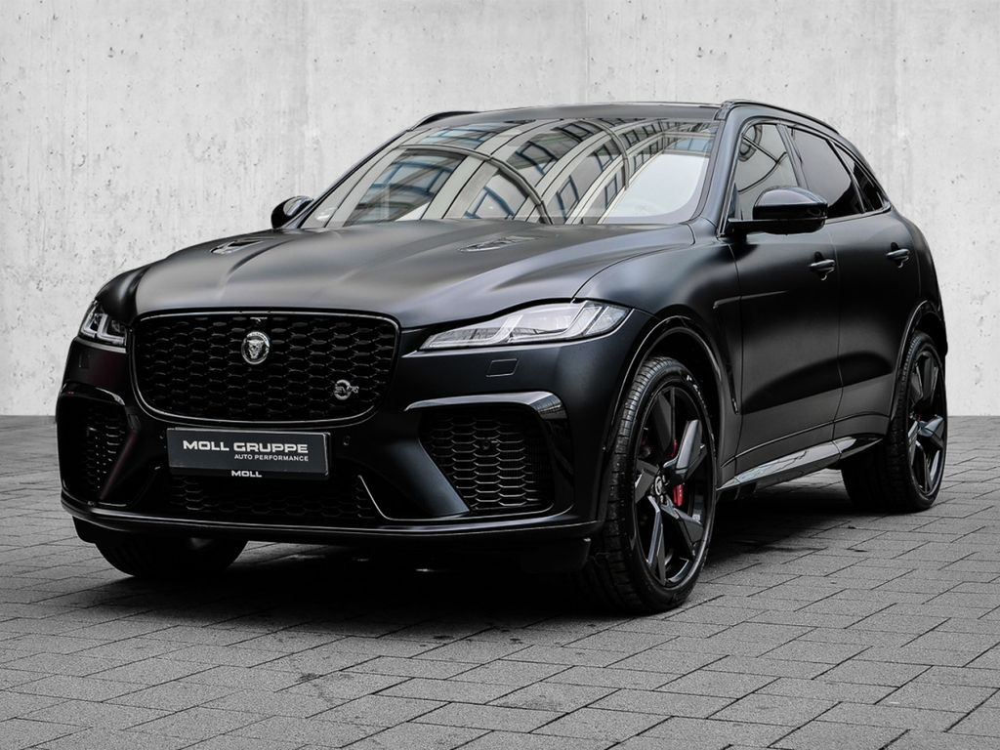
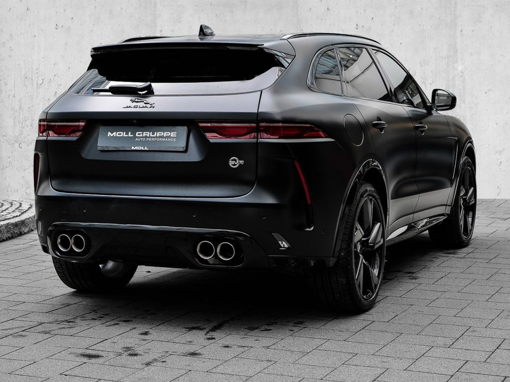
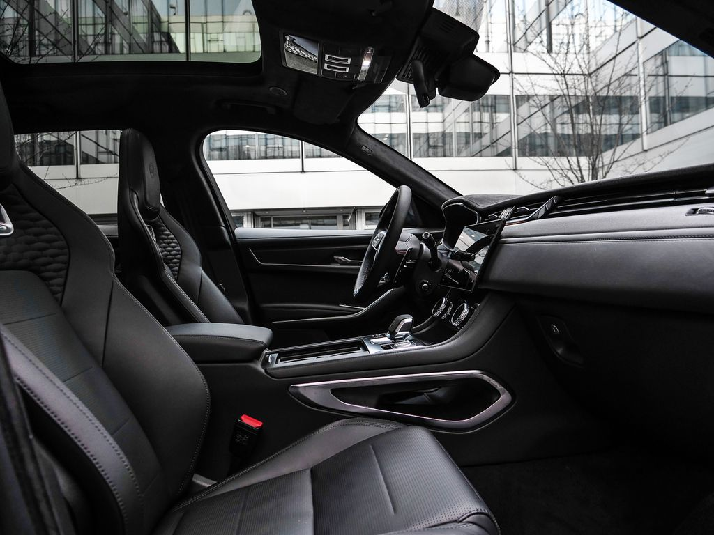
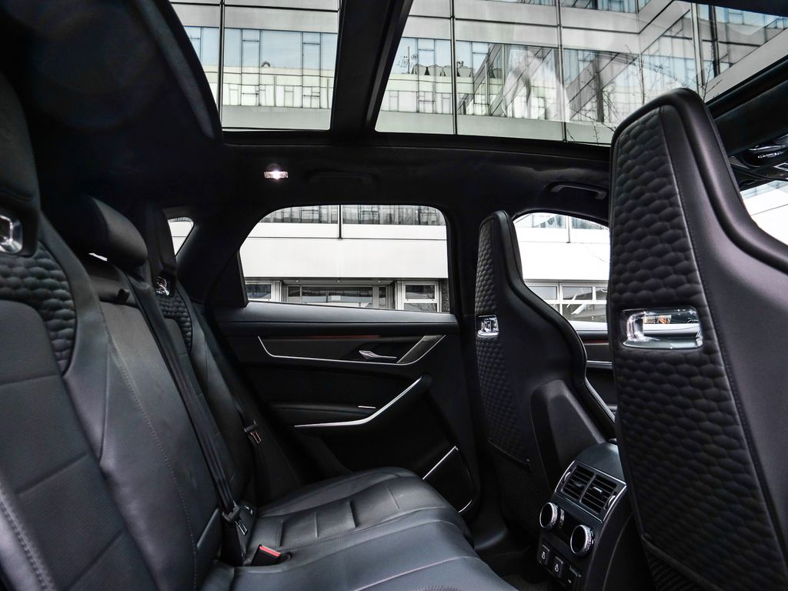
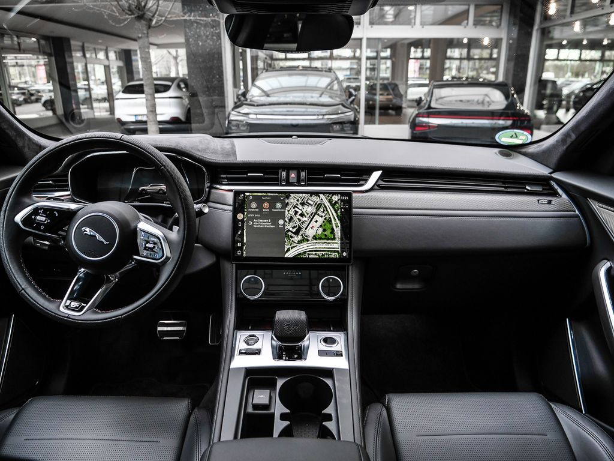
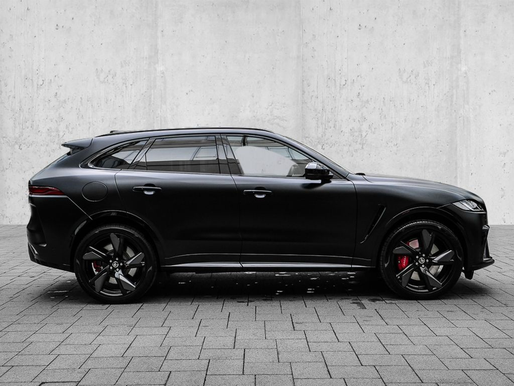
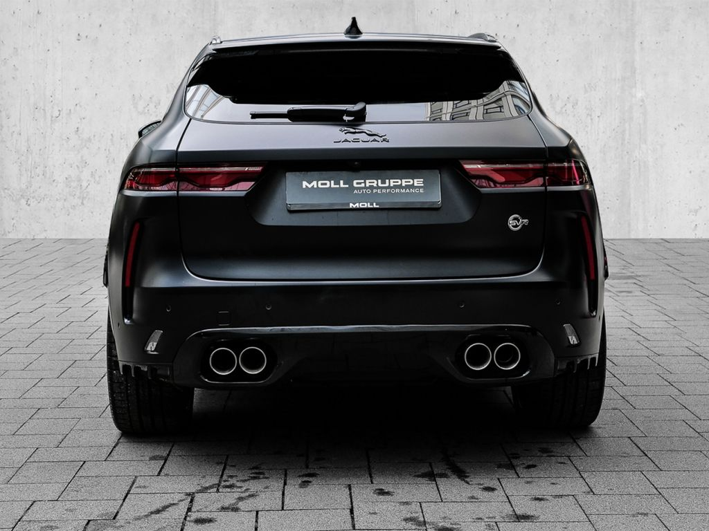
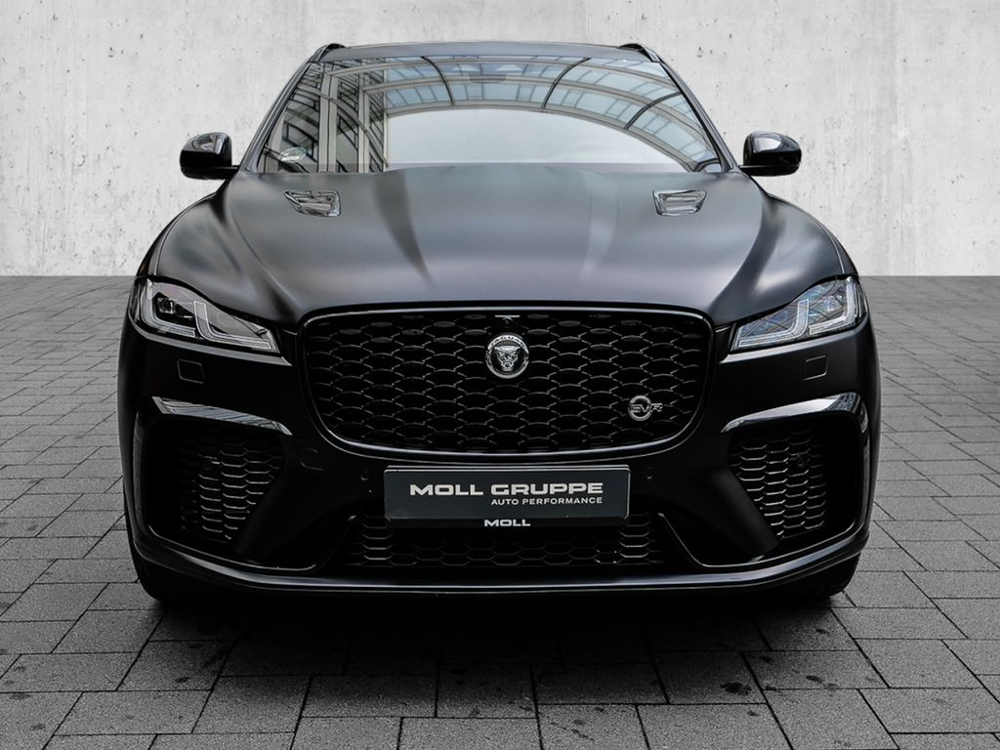

Jaguar F-PACE este un SUV de lux care combină performanța sportivă cu eleganța britanică. Echipat cu un motor eficient de 2.0L Diesel și tracțiune integrală, acest model oferă o experiență de conducere dinamică și rafinată. Interiorul luxos încorporează materiale premium și tehnologie avansată, inclusiv sistemul de infotainment Pivi Pro cu ecran tactil de 11.4 inch.
Siguranța este asigurată prin sisteme avansate precum asistentul pentru menținerea benzii, frânarea automată de urgență și sistemul de monitorizare 360°. Confortul este îmbunătățit de suspensia adaptivă Jaguar Adaptive Dynamics și sistemul de climatizare pe două zone.
Pentru cei care caută un SUV care să combine luxul britanic cu performanța și tehnologia modernă, F-PACE reprezintă alegerea ideală. Este perfect atât pentru deplasările urbane zilnice, cât și pentru călătoriile lungi în confort maxim.

Vânzător: Maria Ionescu
Locație: București